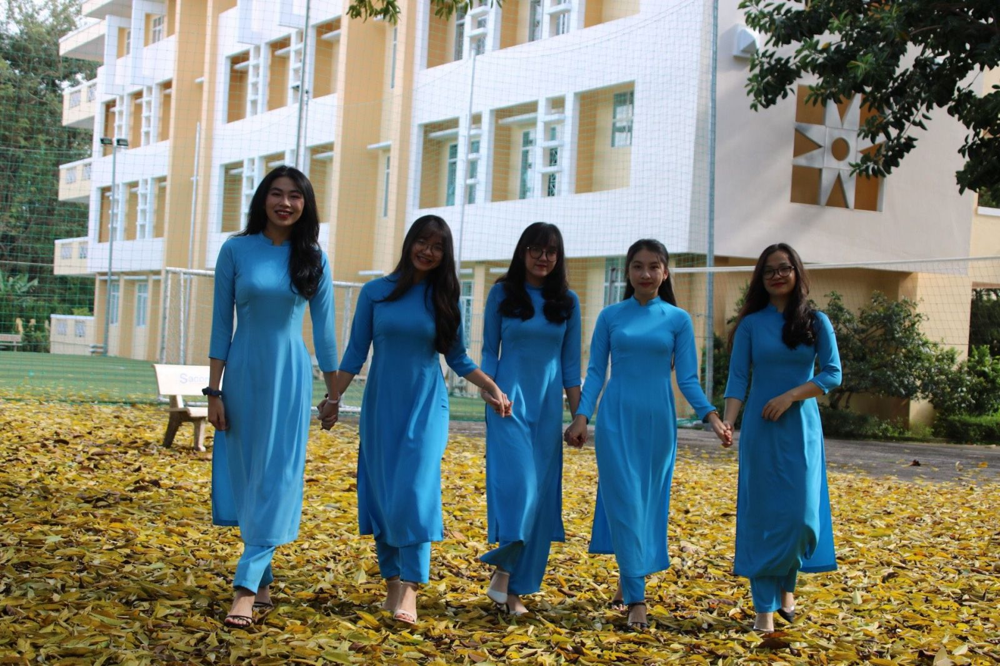
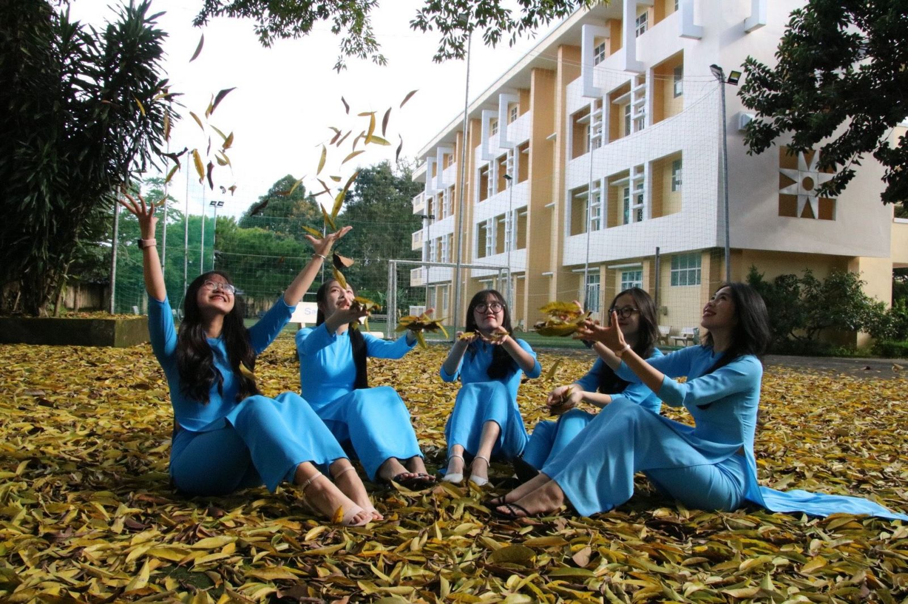
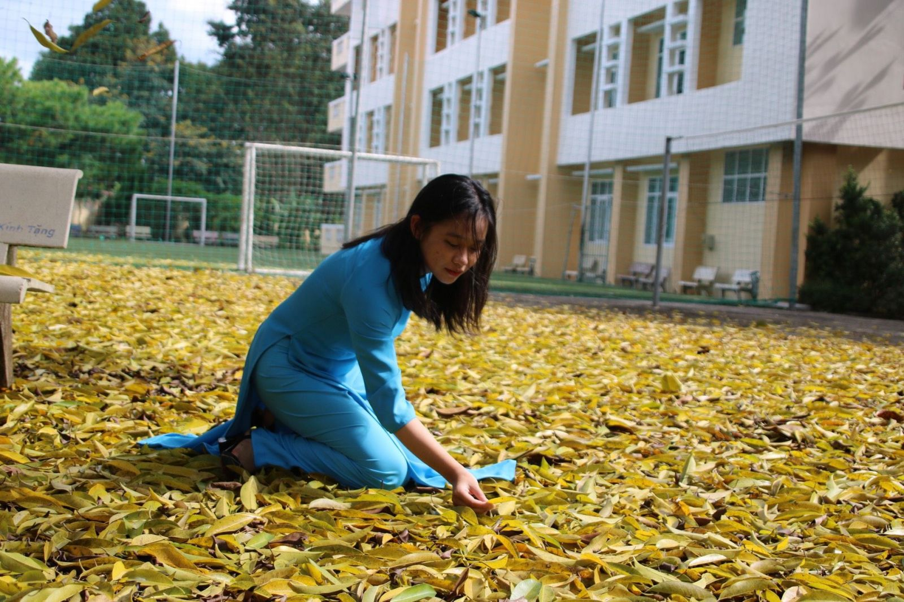
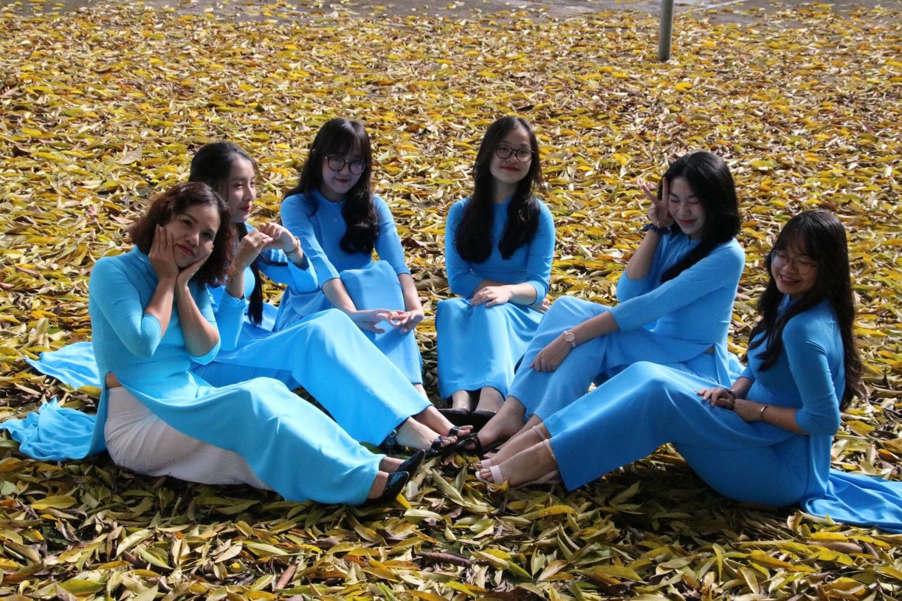
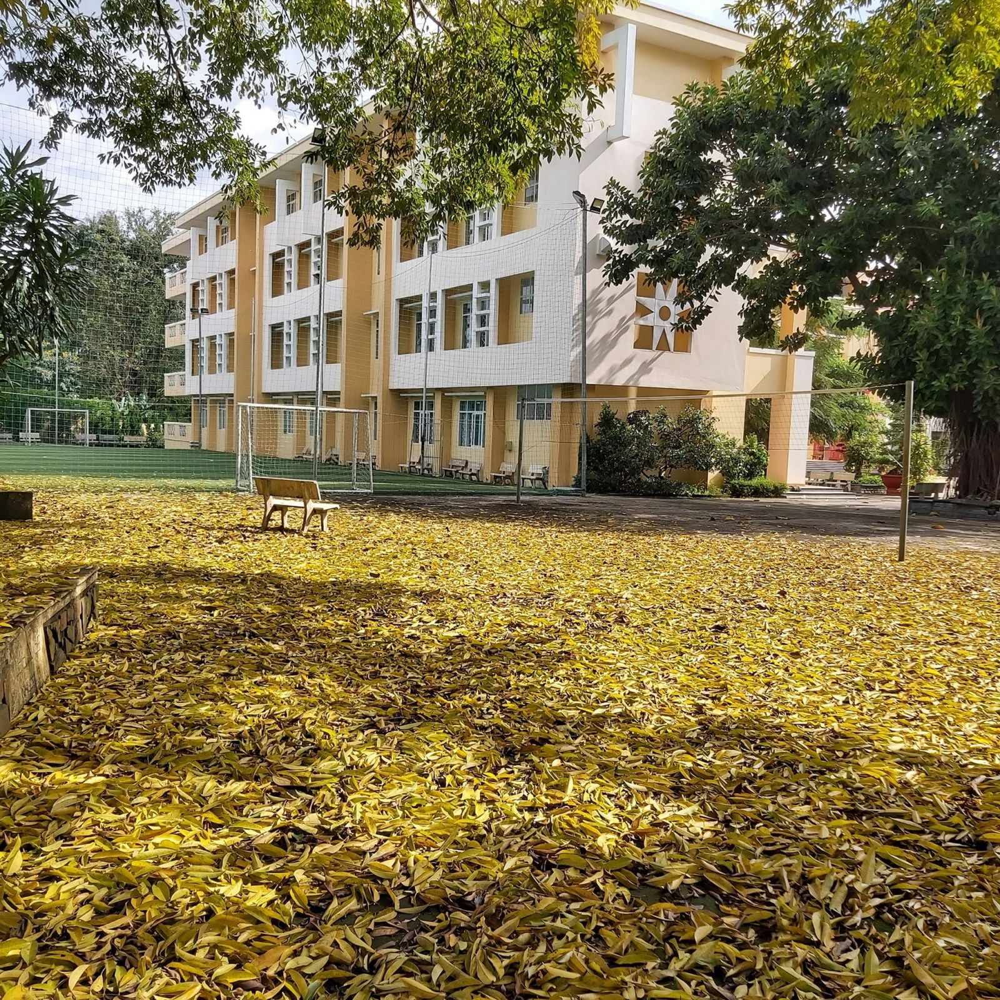

Trường THPT chuyên Hùng Vương: Viết cho em khi mùa thu về!

Chạm vào những khoảnh khắc bất chợt, chạm tiếng nói cười, chạm tiếng yêu thương! Em à, đã vào tháng 10! Heo may về qua phố! Tôi không là thi sĩ, không là nhạc sĩ để viết nên những bản tình ca tặng cho em - những học trò mến yêu của trường THPT chuyên Hùng Vương. Nhưng tôi muốn lưu giữ cho các em những khung hình của mùa thu nơi góc sân trường in dấu chân em!

Đã ai tự hỏi, sao mùa thu với những chiếc lá vàng lại trở thành thi tứ? Sao mùa thu lại như cuộc tình đẹp mà phảng phất dư âm buồn? Có lẽ không chỉ bởi mùa thu mà còn bởi lòng người muốn níu giữ trong nó dù chỉ một khoảnh khắc của trái tim.

Thu năm nay cũng nhẹ nhàng với những cơn gió, những chiếc lá vàng rơi khe khẽ như nhắc ta một hoài niệm trong trẻo thuở xa xưa. Thu năm nay mang nỗi buồn diệu vợi bởi các em chưa được tới trường khi thành phố thân yêu của chúng ta đang chống dịch. Nhớ lắm phải không em, từng hàng ghế đá, từng gốc cây, từng bậc thềm và những góc lớp đầy ắp tiếng cười đùa…? Nhớ không em những cơn mưa mang hồn phố núi chợt đến chợt đi như cái tuổi hồn nhiên, chợt khóc chợt cười của các em đó? Em à! Sắc hoa vẫn thắm, phố mình sẽ sớm bình yên, sân trường sẽ sớm đón các em ngày trở lại.

Yêu mùa thu, càng yêu hơn khi được ngắm nhìn những tà áo xanh của nữ sinh trường THPT chuyên Hùng Vương hòa vào sợi nắng chao nghiêng giữa bầu trời thu cao vợi. Những khung hình lưu giữ khoảnh khắc yêu thương đủ làm xao xuyến những ai đã và đang gắn bó với mái trường này và mãi là một hoài niệm để mỗi chúng ta tìm về.



Bài viết: Nguyễn Thị Loan. Ảnh : Trương Quang Hà